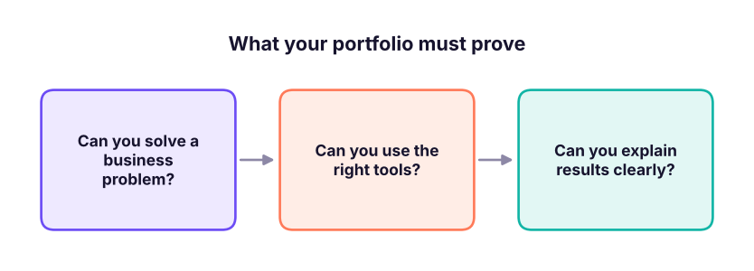

Portfolio, GitHub and Resume for Data Roles
Turn your learning into evidence employers trust. Choose three to five portfolio projects, structure them on GitHub with strong READMEs, publish dashboards and apps, write an ATS-friendly one-page resume with quantified bullets, and optimise LinkedIn and Naukri profiles for analyst, data scientist, data engineer and GenAI roles.
- Select portfolio projects that match the target role
- Publish projects on GitHub with professional READMEs and live demos
- Write a one-page, ATS-friendly resume with quantified impact bullets
- Optimise LinkedIn and job-portal profiles and keywords
What hiring managers look for

| Target role | Must-have evidence |
|---|---|
| Data / business analyst | SQL case study, Excel model, Power BI dashboard, EDA with recommendations |
| Data scientist | EDA, A/B test analysis, ML model with business threshold, explainability |
| Data engineer | Pipeline (ingest → transform → warehouse), dbt/SQL models, orchestration, tests |
| GenAI / AI engineer | RAG assistant with evaluation, tool-using agent, deployed demo, cost analysis |
Pick 3–5 projects (from this handbook)
- SQL: end-to-end sales case study (SQL lesson 15).
- Power BI: Adventure Cycles dashboard with DAX and drill-through (Power BI capstone).
- Python EDA: telecom churn EDA with recommendations (Python lesson 22) or retail analytics capstone (Python lesson 29).
- ML: churn prediction with profit-based threshold and SHAP (ML lesson 28).
- GenAI: NovaMart RAG support assistant with evaluation and guardrails (GenAI lessons 5, 9, 12).
Make at least one project your own: a dataset from data.gov.in, Kaggle or your workplace (anonymised) about a domain you care about.
GitHub structure and README
churn-prediction/
├── README.md ← the most important file
├── data/README.md ← source, licence, how to download (do not commit large/private data)
├── notebooks/01_eda.ipynb
├── src/features.py, train.py, evaluate.py
├── reports/figures/ ← 2–4 key charts used in the README
├── requirements.txt
└── app/ (optional Streamlit demo)README template: Problem (one paragraph, business framing) → Data → Approach (bullets) → Results (numbers + one chart) → Recommendation → How to run → Next steps. Put a live link (Streamlit Cloud, Hugging Face Spaces, Power BI publish-to-web with sample data, Tableau Public) at the top.
Resume: one page, quantified
| Weak bullet | Strong bullet |
|---|---|
| "Worked on churn analysis using Python." | "Built a churn model (ROC-AUC 0.80) and targeting rule that reaches 2.3× more churners than random outreach, worth ≈₹60K/month in saved margin." |
| "Made Power BI dashboards." | "Designed a Power BI sales dashboard (star schema, 25 DAX measures) used weekly by 4 regional managers; cut reporting time from 6 hours to 30 minutes." |
| "Know SQL." | "Wrote 40+ SQL queries (CTEs, window functions) to analyse 6,300 orders; identified tables/bookcases as loss-making due to >20% discounts." |
Formula: action verb + what you did + tool + measurable result. Sections: header (name, city, phone, email, LinkedIn, GitHub, portfolio), summary (2 lines, target role), skills (grouped), projects/experience, education, certifications. Use a simple single-column layout (ATS systems mis-read tables and graphics), PDF format, and mirror keywords from the job description honestly.
LinkedIn and job portals
- Headline: "Data Analyst | SQL · Power BI · Python | Turning sales data into decisions".
- About: 3 short paragraphs: who you are, what you build (link projects), what you are looking for.
- Featured: pin your best project and dashboard. Post a short write-up per project (problem, chart, insight).
- Naukri/Instahyre: complete every field, update weekly (recency boosts ranking), set salary and notice period honestly.
- Choose 3–5 projects that match the target role and show business impact.
- Publish on GitHub with clear READMEs, charts and live demos.
- One-page ATS-friendly resume; every bullet = action + tool + quantified result.
- Keep LinkedIn and portals complete, keyword-aligned and active.
1. What is the most important file in a portfolio repository?
2. Which resume bullet is strongest?
3. Why avoid two-column graphic resumes for online applications?
4. How many portfolio projects are ideal?
(1) Choose your target role and list the 4 projects you will publish. (2) Rewrite three of your current resume bullets with the formula. (3) Write the README for one project using the template.
Show solution
A good result: a one-page resume, four public repositories with READMEs and charts, one live demo link and an updated LinkedIn headline.